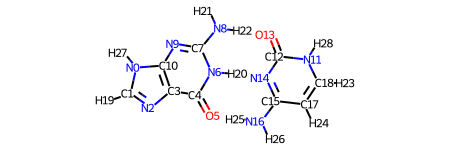
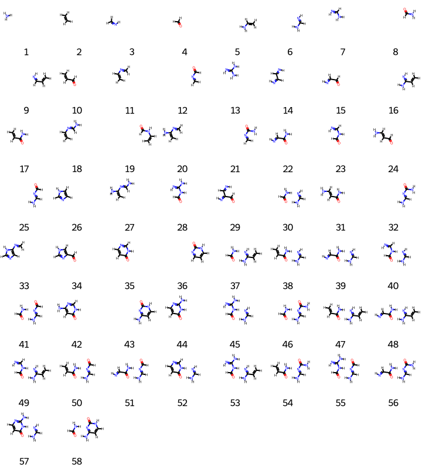

vdW amons generation
Here we illustrate how to generate vdW amons.
from rdkit import Chem
from aqml import io2
import aqml.cheminfo.rdkit.rdkit as crr
import aqml.cheminfo.draw.core as cdc
import aqml.cheminfo.rdkit.core as crc
import aqml.cheminfo.molecule.elements as el #import Elements
#from importlib import reload
#reload(crc); reload(el)
# search for all files under directory vdw/
fs = io2.cmdout('ls ../../tests/vdw/*sdf')
fs
['../../tests/vdw/AT.sdf', '../../tests/vdw/GC.sdf']
vr = cdc.draw_rdkit()
vr.viewm(fs[-1], woH=False)

import aqml.cheminfo.rdkit.rdkit as crr
m = crr.StringM(fs[-1])
Here are a list of non-covalent bonds:
m.ncbs
[[5, 25], [13, 22], [14, 20], [20, 25]]
Now we are ready for generation.
import aqml.cheminfo.algo.amon as caa
# `wg`: write geometry of amons to files? True/False
fs1 = [fs[-1] ]
obj = caa.ParentMols(fs1, k=8, k2=11, ivdw=True, verbose=1, wg=False, i3d=True)
print('number of molecular graphs: ', len(obj.cans))
print('number of conformers: ', len(obj.ms))
#Mid 1 ../../tests/vdw/GC.sdf
r56= [0 1 3 4 6 7]
r56= [0 1 3 4 6 7]
r56= [1 2 4 5 6 7]
++ found 55 cov amons
| Now perceive vdw connectivity between standalone amons
found more than 2 HB's in a conj env N=CN.NC=O keep it!
found more than 2 HB's in a conj env N=CN.N=CNC=O keep it!
found more than 2 HB's in a conj env N=C(N)NC=O.N=CN keep it!
found more than 2 HB's in a conj env C=CC(N)=O.N=CN keep it!
found more than 2 HB's in a conj env N=CN.O=c1ccnc[nH]1 keep it!
found more than 2 HB's in a conj env N=CN.Nc1nccc(=O)[nH]1 keep it!
found more than 2 HB's in a conj env N=CC(N)=O.N=CN keep it!
found more than 2 HB's in a conj env N=CN.Nc1cc(=O)[nH]cn1 keep it!
found more than 2 HB's in a conj env N=CN.NC=CC(N)=O keep it!
found more than 2 HB's in a conj env C=CC(=N)N.NC=O keep it!
found more than 2 HB's in a conj env C=CC(=N)N.N=CNC=O keep it!
found more than 2 HB's in a conj env C=CC(=N)N.N=C(N)NC=O keep it!
found more than 2 HB's in a conj env C=CC(=N)N.C=CC(N)=O keep it!
found more than 2 HB's in a conj env C=CC(=N)N.N=CC(N)=O keep it!
found more than 2 HB's in a conj env C=CC(=N)N.NC=CC(N)=O keep it!
found more than 2 HB's in a conj env C=NC=O.N=C(N)N keep it!
found more than 2 HB's in a conj env N=C(N)N.NC=NC=O keep it!
found more than 2 HB's in a conj env NC=NC=O.NC=O keep it!
found more than 2 HB's in a conj env N=C(N)NC=O.NC=NC=O keep it!
found more than 2 HB's in a conj env C=CC(N)=O.NC=NC=O keep it!
found more than 2 HB's in a conj env N=CC(N)=O.NC=NC=O keep it!
found more than 2 HB's in a conj env NC=CC(N)=O.NC=NC=O keep it!
found more than 2 HB's in a conj env N=C(N)N.O=c1nccc[nH]1 keep it!
found more than 2 HB's in a conj env NC=O.Nc1cc[nH]c(=O)n1 keep it!
found more than 2 HB's in a conj env C=NC(N)=O.N=C(N)N keep it!
found more than 2 HB's in a conj env N=C(N)N.NC=NC(N)=O keep it!
found more than 2 HB's in a conj env NC=NC(N)=O.NC=O keep it!
found more than 2 HB's in a conj env C=CC(N)=O.NC=NC(N)=O keep it!
found more than 2 HB's in a conj env N=CC(N)=O.NC=NC(N)=O keep it!
amon connectivity done
++ found 29 vdw amons with ncomb=2
now search for vdw amon made up of 3 cov amons
done within time: 0.005838155746459961 seconds
++ found 0 vdw amons with ncomb=3
atom indices of all amons done
post-screening: found vdw amons N=CN.Nc1cc(=O)[nH]cn1 with changed hyb, skip!
post-screening: found vdw amons N=CN.NC=CC(N)=O with changed hyb, skip!
post-screening: found vdw amons C=CC(=N)N.NC=CC(N)=O with changed hyb, skip!
post-screening: found vdw amons C=NC=O.N=C(N)N with changed hyb, skip!
post-screening: found vdw amons N=C(N)N.NC=NC=O with changed hyb, skip!
post-screening: found vdw amons NC=CC(N)=O.NC=NC=O with changed hyb, skip!
post-screening: found vdw amons N=C(N)N.O=c1nccc[nH]1 with changed hyb, skip!
post-screening: found vdw amons C=NC(N)=O.N=C(N)N with changed hyb, skip!
post-screening: found vdw amons N=C(N)N.NC=NC(N)=O with changed hyb, skip!
## found 20 mol complexes!
amons now ready for filtering
cans= ['N', 'C=N', 'C=C', 'C=O', 'C=CN', 'N=CN', 'C=CC(=N)N', 'C=CC=N', 'C=NC=O', 'NC=NC=O', 'NC=O', 'O=c1nccc[nH]1', 'Nc1cc[nH]c(=O)n1', 'C=NC(N)=O', 'NC=NC(N)=O', 'C=CNC=O', 'N=C(N)N', 'N=CNC=O', 'N=C(N)NC=O', 'C=CN=C', 'C=CN=CN', 'C=CC=O', 'C=CC(N)=O', 'O=c1ccnc[nH]1', 'Nc1nccc(=O)[nH]1', 'N=CC(=N)C=O', 'N=CC=N', 'N=CC=O', 'N=CC(N)=O', 'C=NC(=C)N', 'Nc1cc(=O)[nH]cn1', 'C=C(N)N=CN', 'NC=CC=O', 'NC=CC(N)=O', 'c1c[nH]cn1', 'C=Nc1cnc[nH]1', 'O=Cc1c[nH]cn1', 'N=CN.NC=O', 'N=CN.N=CNC=O', 'N=C(N)NC=O.N=CN', 'C=CC(N)=O.N=CN', 'N=CN.O=c1ccnc[nH]1', 'N=CN.Nc1nccc(=O)[nH]1', 'N=CC(N)=O.N=CN', 'C=CC(=N)N.NC=O', 'C=CC(=N)N.N=CNC=O', 'C=CC(=N)N.N=C(N)NC=O', 'C=CC(=N)N.C=CC(N)=O', 'C=CC(=N)N.N=CC(N)=O', 'NC=NC=O.NC=O', 'N=C(N)NC=O.NC=NC=O', 'C=CC(N)=O.NC=NC=O', 'N=CC(N)=O.NC=NC=O', 'NC=O.Nc1cc[nH]c(=O)n1', 'NC=NC(N)=O.NC=O', 'C=CC(N)=O.NC=NC(N)=O', 'N=CC(N)=O.NC=NC(N)=O']
## summary: found 57 molecular graphs, 58 configurations
number of molecular graphs: 57
number of conformers: 58
Note that by default we have used M='cml1' as the molecular representation to prune conformers that are very similar. Other options could also be used, e.g., rmsd.
For visualization, we use
vr.viewms(obj.ms, wlgd_text='id', nmr=8, molSize=(90,100))
